Baltic Bank Connect
Pangaga gateway otsekanali lepingu sõlmimine
Business Centralis pangaliidese kasutamiseks on vajalik oma pangas sõlmida gateway otsekanali leping ning tellida sertifikaat. Sertifikaadi tellimise juhise saadab pank pärast lepingu sõlmimist. Sertifikaadi faili formaat peab olema .p12 parooliga kaitstud.
Swedbank
https://www.swedbank.ee/business/d2d/ebanking/gateway
Toetatud teenused:
-
Maksete edastamine panka (allkirjastamata maksed)
-
Konto väljavõte - automaatselt päritav eelmise päeva väljavõte
-
Jooksva päeva kontoväljavõtte päring
LHV
Toetatud teenused:
-
Maksete edastamine panka (allkirjastamata maksed)
-
Konto väljavõte - automaatselt päritav eelmise päeva väljavõte
SEB
https://www.seb.ee/ariklient/igapaevapangandus/elektroonilised-kanalid/baltic-gateway
Toetatud teenused:
-
Maksete edastamine panka (allkirjastamata maksed)
-
Jooksva päeva kontoväljavõtte päring (tööjärjekorra kanne tuleb seadistada piisava sagedusega, et päeva lõpust ei jääks mõni tehing pangast pärimata)
COOP Pank
https://www.cooppank.ee/gateway
Toetatud teenused:
-
Maksete edastamine panka (allkirjastamata maksed)
-
Konto väljavõte - automaatselt päritav eelmise päeva väljavõte
Turvasertifikaat
Business Centralis tuleb pangaliidese kasutamiseks seadistada turvasertifikaat. Pärast lepingu sõlmimist saadab pank teile juhiseid sertifikaadi tellimiseks. Tegemist on tehniliste sammudega, mistõttu soovitame abi paluda oma IT osakonnast või pöörduda oma BC partneri poole, kes teid abistab.
Vajalik on:
-
Sertifikaadipäringu koostamine, sertifikaadi tellimiseks.
-
Sertifikaadi- ja privaatvõtmefaili liitmine pfx/p12 failiks ja parooli genereerimine.
-
pfx/p12 faili ja parooli seadistamine BC-s.
Swedbank juhend: http://dev.swedbankgateway.net/content/general-info/doc/How-to-generate-CSR-and-convert-private-key-to-p12.pdf https://www.swedbank.com/openbanking/swedbank-gateway-go-live.html
LHV juhend: https://partners.lhv.ee/en/connect/#certificates
SEB juhend: https://developer.baltics.sebgroup.com/bgw/documentation/authentication
Coop Pank juhend: https://www.cooppank.ee/s3fs-public/juhendid/Gateway_votmete_genereerimise_juhend.pdf
Pangaliidese seadistamine
Seadistamine kasutades juhendatud seadistust
Mine Juhendatud seadistus ning vali Set-Up OIXIO Bank Link
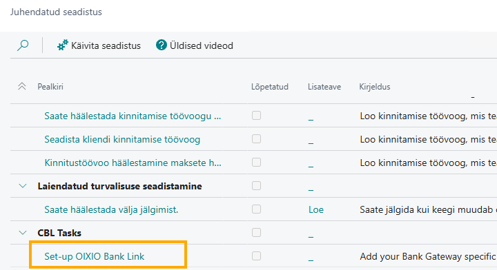
Avaneb Pangaliidese seadistamine aken, kus tee vajalikud tegevused ning liigu Edasi nupu abil järgmiste sammude juurde.
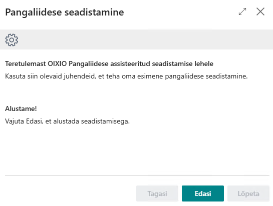
Manuaalne pangaliidese seadistamine
Ava Business Centralis Pangaliidese seaded ning vali liidestatav pank Panga kanalid blokist. Seadistatavad väljad on pankadel erinevad.
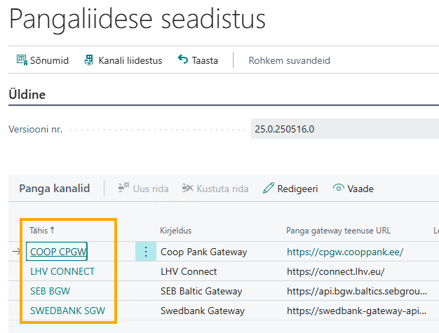
SWED SGW puhul täida Lepingu ID, API võti (Kliendi ID), Parool väljad ning seejärel lae üles sertifikaat kasutades menüüribal nuppu Lisa sertifikaat:
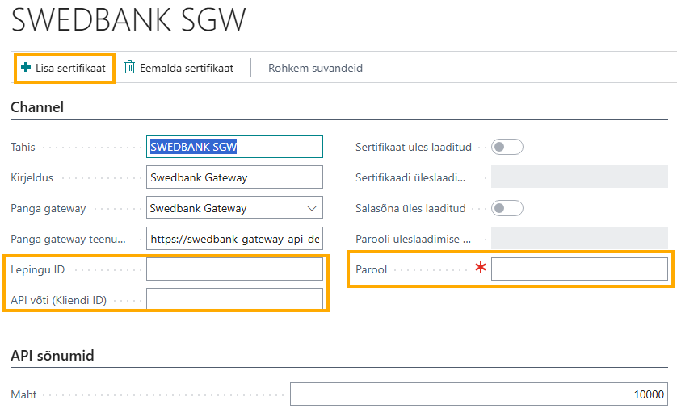
SEB BGW puhul täida lepingu ID väli ja lisa sertifikaat.
LHV CONNECT puhul tuleb ainult lisada sertifikaat.
COOP CPGW puhul tuleb ainult lisada sertifikaat.
Pangakonto seadistus
Ava Pangakontod loend ning ava liidestatava pangakonto kaart, täida OIXIO Pangaliides blokis Panga kanal:
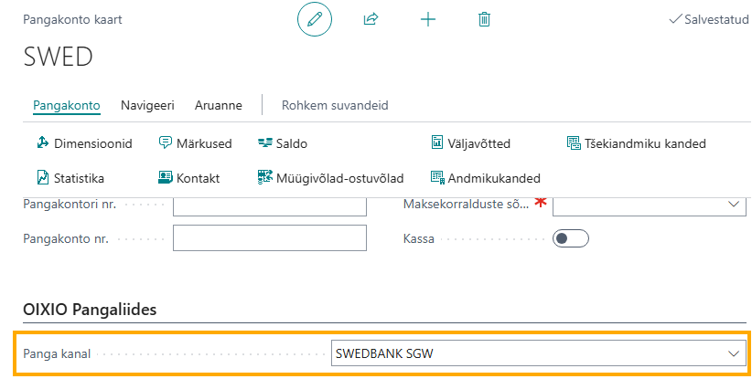
Pangakonto kaardil peavad olema täidetud järgmised väljad:
-
Maksekorralduste sõnumite numbrid
-
Pangakonto konteeringurühm
-
SWIFT tähis
-
IBAN
-
Panga väljavõtte impordi vorming
-
Makse ekspordi vorming
Tööjärjekorra kanded
Pane vastava panga tööjärjekorra kanded valmis olekusse.
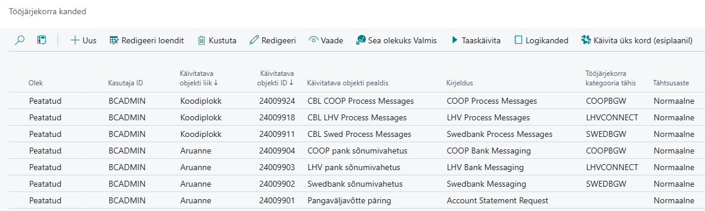
Maksete eksportimine panka
Maksežurnaali töölehel tuleb märkida Luba maksete eksporti, et saaks maksefaili panka saata ja Kontrolli makse staatuseid enne konteerimist, et konteerimisel toimuks kontroll, kas mõni makse on tühistatud.
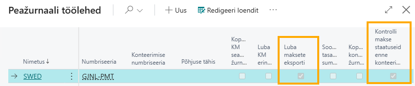
Täida maksežurnaal sooritatavate maksetega kas käsitsi või soovitades makseid hankijale.
Maksefaili panka saatmiseks vali menüüribalt Pank - Saada panka...
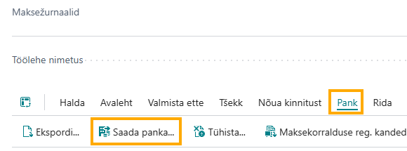
Maksed liiguvad panka kinnitamata olekus. Need tuleb pangas eraldi kinnitada ja sooritada tehingud.
Pärast maksefaili panka saatmist ilmub mõne aja pärast maksežurnaali factboxi info makse oleku kohta:
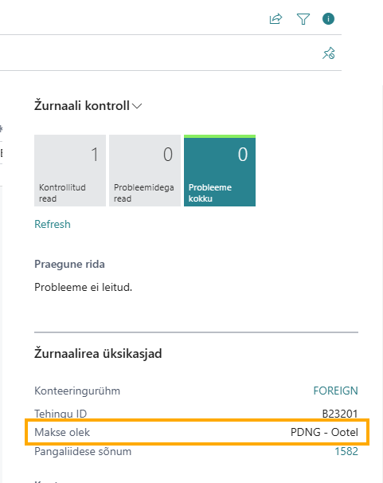
Makse olek näitab, mis seisus makse pangas on.
Võimalikud makse olekud:
-
Tagasi lükatud - makse pangas tagasi lükatud. SEB puhul tähendab Tagasi lükatud staatus, et makse impordifaili kontroll ei olnud edukas
-
Ootel - ootab pangas makse kinnitamist ja sooritamist. SEB puhul tähendab Ootel staatus makse impordifaili kontrollimist
-
Osaliselt kinnitatud -vähemalt üks makse on kinnitatud
-
Kinnitatud - makse on kinnitatud, kuid ülekanne veel tegemata
-
Teostatud - makse on sooritatud
-
Aktsepteeritud koos muudatusega - tehtud mõned muudatused ja aktsepteeritud, kuid ülekanne veel tegemata
-
Faili kontroll edukas - makse impordifaili kontroll edukas (SEB)
Pangaväljavõtte import
Käsitsi importimine
Maksete sobitamise žurnaalis vali Pangaliidese maksete importimine:
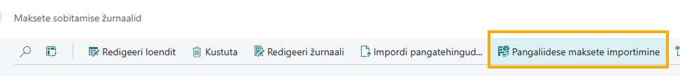
Avanevas aknas vali, millise panga millist väljavõtte tüüpi soovid importida:
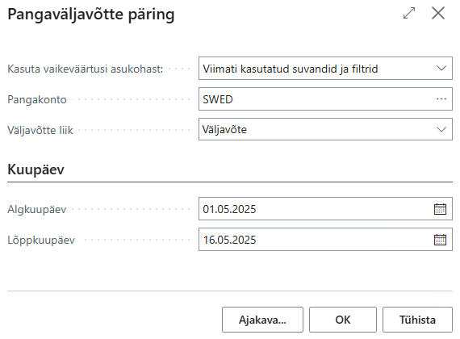
Päevalõpu väljavõte - saad määrata ainult lõppkuupäeva. BC-sse päritakse kõik selleks kuupäevaks importimata pangatehingud.
Väljavõte - saad määrata perioodi, mille kohta pangaväljavõte päritakse BC-sse
Päevasisene väljavõte - päritakse BC töökuupäeva väljavõte
Pärast filtrite määramist tuleb teade:
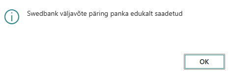
See tähendab, et päring on panga saadetud ja läheb natukene aega enne kui pangaväljavõte BC-sse ilmub. SEB väljavõte tekib kohe.
Pangaväljavõtte automaatne import
Eelmise päeva kohta automaatselt imporditava pangaväljavõtte saamiseks tuleb seadistada Tööjärjekorra kanded all automaatne töö.
Mine Tööjärjekorra kanded ja vajuta Uus
Täida Käivitatava objekti liik Aruanne ja Käivitatava objekti ID 24009901, Varaseim alustamise kuup/kl:
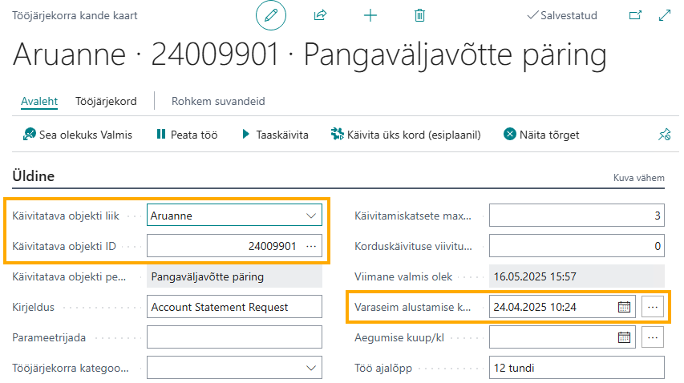
Varaseim alustamise kuup/kl täida sellega, millal soovid, et eelmise päeva väljavõte BC-sse päritakse.
Seejärel vajuta sisse marker Aruande päringuakna valikud:
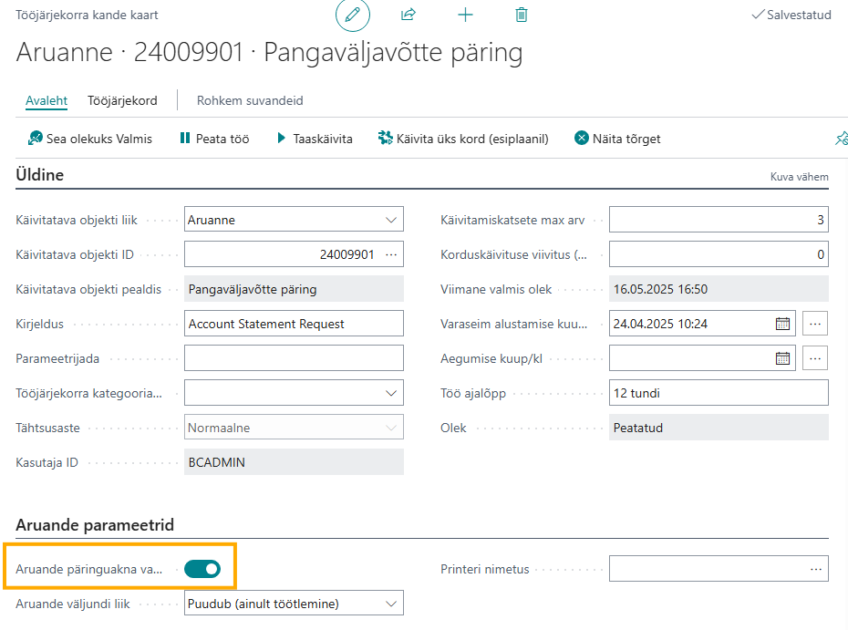
Avaneb sama vaade, mis maksete sobitamise žurnaalis Pangaliidese maksete importimine nupu vajutamisel.
Täida Pank, mille väljavõtet automaatselt importida soovid ja Väljavõtte tüüp lahtrist vali Päevalõpu väljavõte. Algkuupäev ja Lõppkuupäev väljad jäta tühjaks.
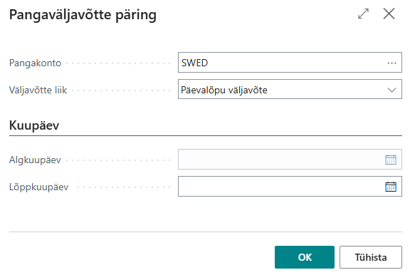
Täida Korduvus blokis, mis päeviti päring teostatakse ja Minutite arv käivitamise vahel määra 1440, et kord päevas toimuks pangaväljavõtte päring:
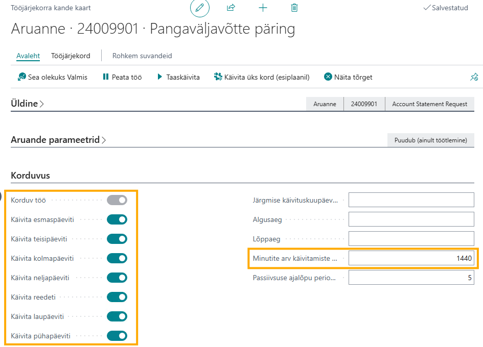
Iga pangakonto kohta tuleb teha eraldi tööjärjekorra kanne.